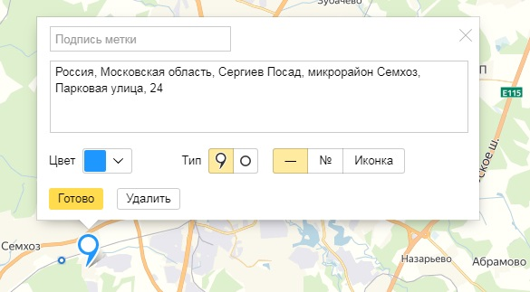
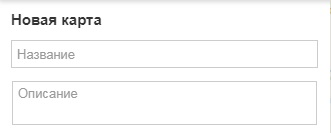
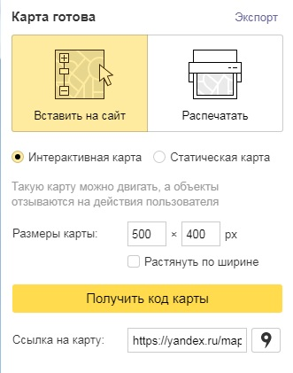
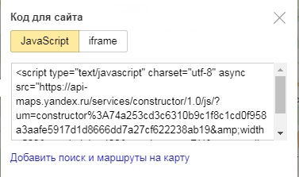

Заходим на сайт конструктора карт от Яндекс
Жмем "Создать карту"
Вводим необходимый адрес и жмем найти
Так же мы можем немного отстилизовать отметку на карте (поменять цвет и применить)
Теперь слева даем имя нашей карте
После чего жмем кнопку "Сохранить и продолжить"
Теперь надо настроить нашу карту
Здесь мы можем выбрать тип карты (интерактивная - значит ее можно приближать удалять листать и т.д. Статическая - это просто будет картинка в png)
Затем можно указать размеры нашей карты, так же можно сделать ей ширину 100%
После того как все настроили жмем "Получить код карты"
Копируем скрипт и вставляем в блок с версткой. ВСЁ!!!